作者: 陈迪豪，就职小米科技，深度学习工程师，TensorFlow代码提交者。
TensorFlow深度学习框架
Google不仅是大数据和云计算的领导者，在机器学习和深度学习上也有很好的实践和积累，在2015年年底开源了内部使用的深度学习框架TensorFlow。
与Caffe、Theano、Torch、MXNet等框架相比，TensorFlow在Github上Fork数和Star数都是最多的，而且在图形分类、音频处理、推荐系统和自然语言处理等场景下都有丰富的应用。最近流行的Keras框架底层默认使用TensorFlow，著名的斯坦福CS231n课程使用TensorFlow作为授课和作业的编程语言，国内外多本TensorFlow书籍已经在筹备或者发售中，AlphaGo开发团队Deepmind也计划将神经网络应用迁移到TensorFlow中，这无不印证了TensorFlow在业界的流行程度。
TensorFlow不仅在Github开放了源代码，在《TensorFlow: Large-Scale Machine Learning on Heterogeneous Distributed Systems》论文中也介绍了系统框架的设计与实现，其中测试过200节点规模的训练集群也是其他分布式深度学习框架所不能媲美的。Google还在《Wide & Deep Learning for Recommender Systems》和《The YouTube Video Recommendation System》论文中介绍了Google Play应用商店和YouTube视频推荐的算法模型，还提供了基于TensorFlow的代码实例，使用TensorFlow任何人都可以在ImageNet或Kaggle竞赛中得到接近State of the art的好成绩。
TensorFlow从入门到应用
毫不夸张得说，TensorFlow的流行让深度学习门槛变得越来越低，只要你有Python和机器学习基础，入门和使用神经网络模型变得非常简单。TensorFlow支持Python和C++两种编程语言，再复杂的多层神经网络模型都可以用Python来实现，如果业务使用其他编程也不用担心，使用跨语言的gRPC或者HTTP服务也可以访问使用TensorFlow训练好的智能模型。
那使用Python如何编写TensorFlow应用呢？从入门到应用究竟有多难呢？
下面我们编写了一个Hello world应用，输出字符串和进行简单的运算。
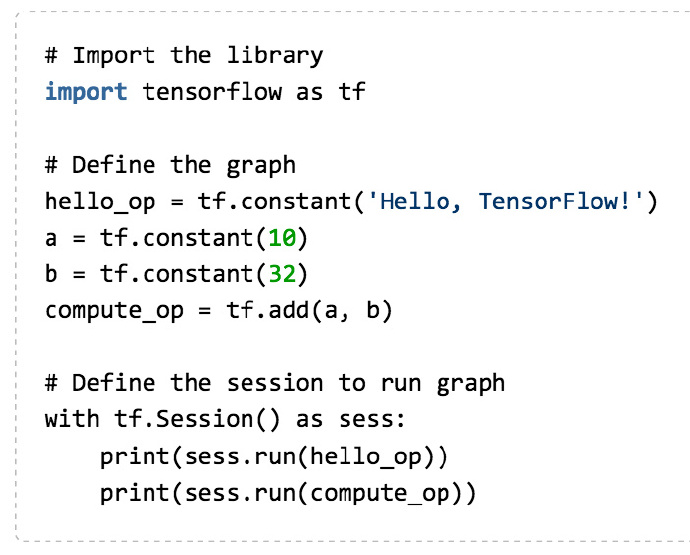
从这段简单的代码可以了解到TensorFlow的使用非常方便，通过Python标准库的形式导入，不需要启动额外的服务。第一次接触TensorFlow可能比较疑惑，这段逻辑Python也可以实现，为什么要使用tf.constant()和tf.Session()呢？其实TensorFlow通过Graph和Session来定义运行的模型和训练，这在复杂的模型和分布式训练上有非常大好处，将在文章的后续部分介绍到。
前面的Hello world应用并没有训练模型，接下来介绍一个逻辑回归问题与模型。我们使用numpy构建一组线性关系的数据，通过TensorFlow实现的随机梯度算法，在训练足够长的时间后可以自动求解函数中的斜率和截距。
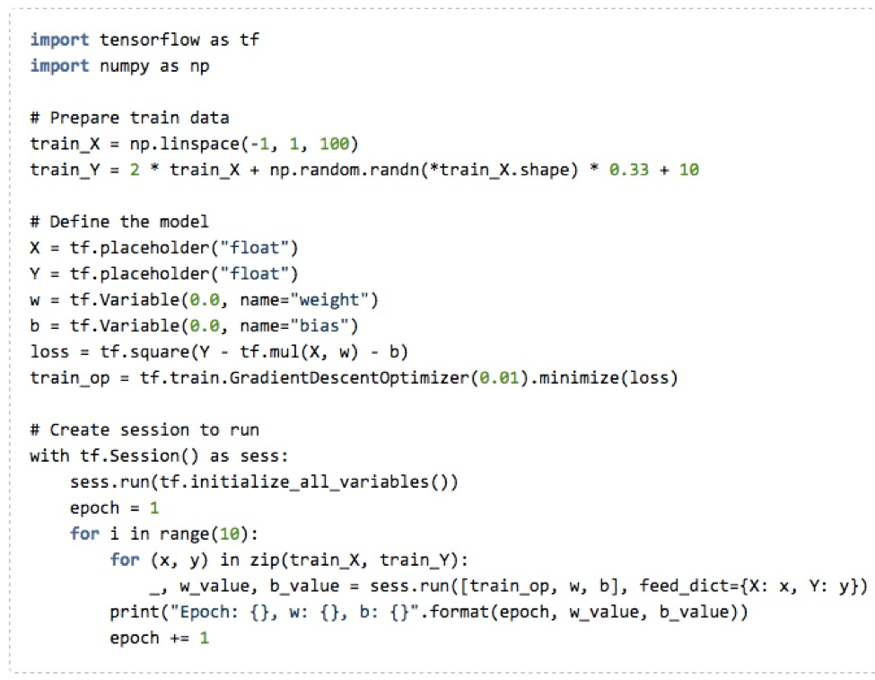
上面的代码可以在tensorflow_examples项目中找到，经过训练，我们看到输出的斜率w约为2，截距b约为10，与我们构建的数据之间的关联关系十分吻合！注意在TensorFlow代码中并没有实现最小二乘法等算法，也没有if-else来控制代码逻辑，完全是由数据驱动并且根据梯度下降算法动态调整Loss值学习出来的。这样我们即使换了其他数据集，甚至换成图像分类等其他领域的问题，无需修改代码也可以由机器自动学习，这也是神经网络和TensorFlow强大的地方。
前面的模型只有w和b两个变量，如果数据处于非线性关系就难以得到很好的结果，因此我们建议使用深层神经网络，这也是TensorFlow设计重点就要解决的深度学习模型。我们知道Google在2014年凭借Inception模型赢下了ImageNet全球竞赛，里面代码就是基于TensorFlow实现的，下面是较为复杂的模型定义代码。
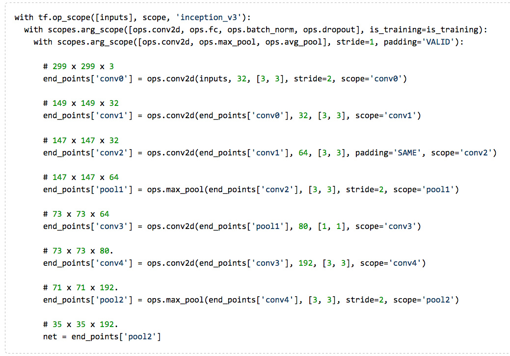
使用TensorFlow已经封装好的全连接网络、卷积神经网络、RNN和LSTM，我们已经可以组合出各种网络模型，实现Inception这样的多层神经网络如拼凑Lego一样简单。但在选择优化算法、生成TFRecords、导出模型文件和支持分布式训练上，这里有比较多的细节，接下来我们将在一篇文章的篇幅内介绍所有TensorFlow相关的核心使用技巧。
TensorFlow核心使用技巧
为了介绍TensorFlow的各种用法，我们将使用deep_recommend_system这个开源项目，它实现了TFRecords、QueueRunner、Checkpoint、TensorBoard、Inference、GPU支持、分布式训练和多层神经网络模型等特性，而且可以轻易拓展实现Wide and deep等模型，在实际的项目开发中可以直接下载使用。
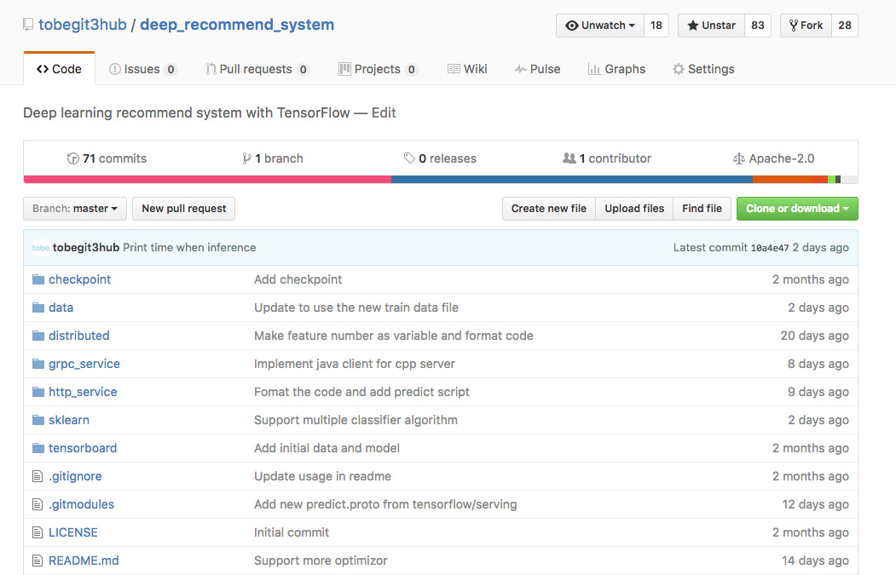
1. 准备训练数据
一般TensorFlow应用代码包含Graph的定义和Session的运行，代码量不大可以封装到一个文件中，如cancer_classifier.py文件。训练前需要准备样本数据和测试数据，一般数据文件是空格或者逗号分隔的CSV文件，但TensorFlow建议使用二进制的TFRecords格式，这样可以支持QueuRunner和Coordinator进行多线程数据读取，并且可以通过batch size和epoch参数来控制训练时单次batch的大小和对样本文件迭代训练多少轮。如果直接读取CSV文件，需要在代码中记录下一次读取数据的指针，而且在样本无法全部加载到内存时使用非常不便。
在data目录，项目已经提供了CSV与TFRecords格式转换工具convert_cancer_to_tfrecords.py，参考这个脚本你就可以parse任意格式的CSV文件，转成TensorFlow支持的TFRecords格式。无论是大数据还是小数据，通过简单的脚本工具就可以直接对接TensorFlow，项目中还提供print_cancer_tfrecords.py脚本来调用API直接读取TFRecords文件的内容。
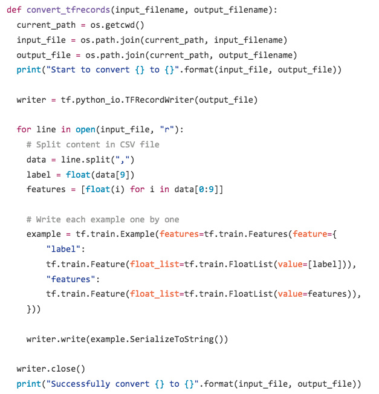
2. 接受命令行参数
有了TFRecords，我们就可以编写代码来训练神经网络模型了，但众所周知，深度学习有过多的Hyperparameter需要调优，我们就优化算法、模型层数和不同模型都需要不断调整，这时候使用命令行参数是非常方便的。
TensorFlow底层使用了python-gflags项目，然后封装成tf.app.flags接口，使用起来非常简单和直观，在实际项目中一般会提前定义命令行参数，尤其在后面将会提到的Cloud Machine Learning服务中，通过参数来简化Hyperparameter的调优。
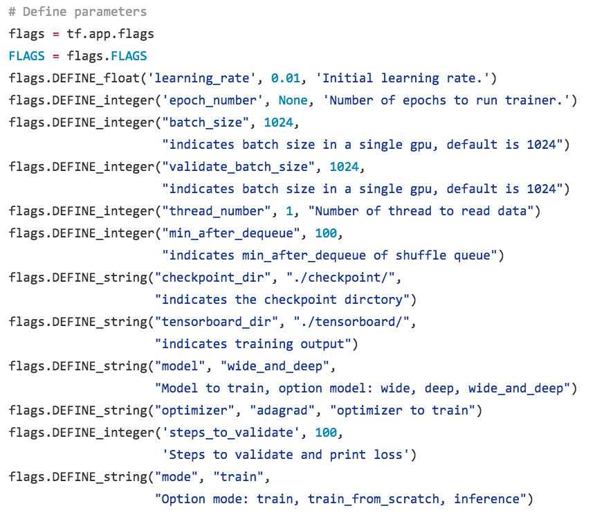
3. 定义神经网络模型
准备完数据和参数，最重要的还是要定义好网络模型，定义模型参数可以很简单，创建多个Variable即可，也可以做得比较复杂，例如使用使用tf.variable_scope()和tf.get_variables()接口。为了保证每个Variable都有独特的名字，而且能都轻易地修改隐层节点数和网络层数，我们建议参考项目中的代码，尤其在定义Variables时注意要绑定CPU，TensorFlow默认使用GPU可能导致参数更新过慢。
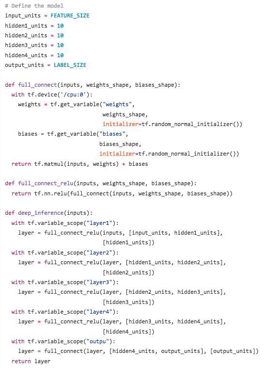
上述代码在生产环境也十分常见，无论是训练、实现inference还是验证模型正确率和auc时都会用到。项目中还基于此代码实现了Wide and deep模型，在Google Play应用商店的推荐业务有广泛应用，这也是适用于普遍的推荐系统，将传统的逻辑回归模型和深度学习的神经网络模型有机结合在一起。
4. 使用不同的优化算法
定义好网络模型，我们需要觉得使用哪种Optimizer去优化模型参数，是应该选择Sgd、Rmsprop还是选择Adagrad、Ftrl呢？对于不同场景和数据集没有固定的答案，最好的方式就是实践，通过前面定义的命令行参数我们可以很方便得使用不同优化算法来训练模型。
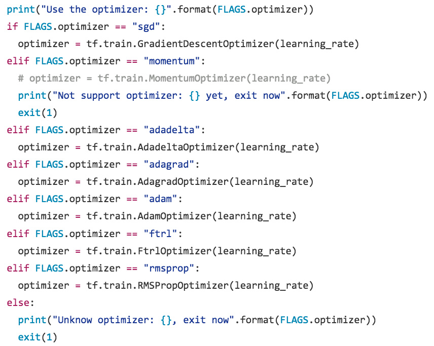
在生产实践中，不同优化算法在训练结果、训练速度上都有很大差异，过度优化网络参数可能效果没有使用其他优化算法来得有效，因此选用正确的优化算法也是Hyperparameter调优中很重要的一步，通过在TensorFlow代码中加入这段逻辑也可以很好地实现对应的功能。
5. Online learning与Continuous learning
很多机器学习厂商都会宣称自己的产品支持Online learning，其实这只是TensorFlow的一个基本的功能，就是支持在线数据不断优化模型。TensorFlow可以通过tf.train.Saver()来保存模型和恢复模型参数，使用Python加载模型文件后，可不断接受在线请求的数据，更新模型参数后通过Saver保存成checkpoint，用于下一次优化或者线上服务。
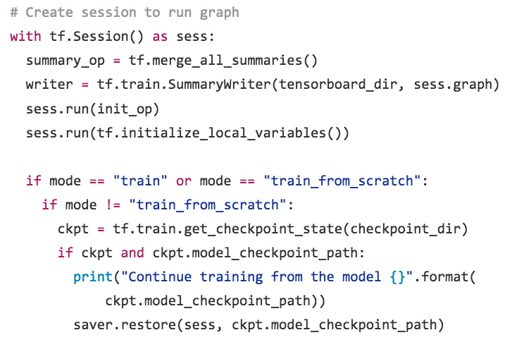
而Continuous training是指训练即使被中断，也能继续上一次的训练结果继续优化模型，在TensorFlow中也是通过Saver和checkpoint文件来实现。在deep_recommend_system项目默认能从上一次训练中继续优化模型，也可以在命令行中指定train_from_scratch，不仅不用担心训练进程被中断，也可以一边训练一边做inference提供线上服务。
6. 使用TensorBoard优化参数
TensorFlow还集成了一个功能强大的图形化工具，也即是TensorBoard，一般只需要在代码中加入我们关心的训练指标，TensorBoard就会自动根据这些参数绘图，通过可视化的方式来了解模型训练的情况。
tf.scalar_summary(‘loss’, loss)
tf.scalar_summary(‘accuracy’, accuracy)
tf.scalar_summary(‘auc’, auc_op)
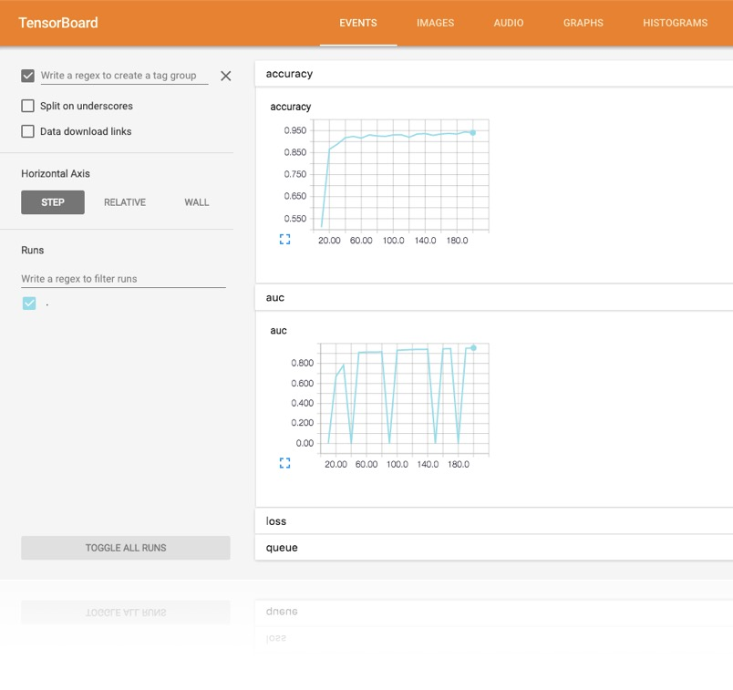
7. 分布式TensorFlow应用
最后不得不介绍TensorFlow强大的分布式计算功能，传统的计算框架如Caffe，原生不支持分布式训练，在数据量巨大的情况下往往无法通过增加机器scale out。TensorFlow承载了Google各个业务PB级的数据，在设计之初就考虑到分布式计算的需求，通过gRPC、Protobuf等高性能库实现了神经网络模型的分布式计算。
实现分布式TensorFlow应用并不难，构建Graph代码与单机版相同，我们实现了一个分布式的cancer_classifier.py例子，通过下面的命令就可以启动多ps多worker的训练集群。
|
1 2 3 4 5 6 7 |
cancer_classifier.py --ps_hosts=127.0.0.1:2222,127.0.0.1:2223 --worker_hosts=127.0.0.1:2224,127.0.0.1:2225 --job_name=ps --task_index=0 cancer_classifier.py --ps_hosts=127.0.0.1:2222,127.0.0.1:2223 --worker_hosts=127.0.0.1:2224,127.0.0.1:2225 --job_name=ps --task_index=1 cancer_classifier.py --ps_hosts=127.0.0.1:2222,127.0.0.1:2223 --worker_hosts=127.0.0.1:2224,127.0.0.1:2225 --job_name=worker --task_index=0 cancer_classifier.py --ps_hosts=127.0.0.1:2222,127.0.0.1:2223 --worker_hosts=127.0.0.1:2224,127.0.0.1:2225 --job_name=worker --task_index=1 |
在深入阅读代码前，我们需要了解分布式TensorFlow中ps、worker、in-graph、between-graph、synchronous training和asynchronous training的概念。首先ps是整个训练集群的参数服务器，保存模型的Variable，worker是计算模型梯度的节点，得到的梯度向量会交付给ps更新模型。in-graph与between-graph对应，但两者都可以实现同步训练和异步训练，in-graph指整个集群由一个client来构建graph，并且由这个client来提交graph到集群中，其他worker只负责处理梯度计算的任务，而between-graph指的是一个集群中多个worker可以创建多个graph，但由于worker运行的代码相同因此构建的graph也相同，并且参数都保存到相同的ps中保证训练同一个模型，这样多个worker都可以构建graph和读取训练数据，适合大数据场景。同步训练和异步训练差异在于，同步训练每次更新梯度需要阻塞等待所有worker的结果，而异步训练不会有阻塞，训练的效率更高，在大数据和分布式的场景下一般使用异步训练。
8. Cloud Machine Learning
前面已经介绍了TensorFlow相关的全部内容，细心的网友可能已经发现，TensorFlow功能强大，但究其本质还是一个library，用户除了编写TensorFlow应用代码还需要在物理机上起服务，并且手动指定训练数据和模型文件的目录，维护成本比较大，而且机器之间不可共享。
纵观大数据处理和资源调度行业，Hadoop生态俨然成为了业界的标准，通过MapReduce或Spark接口来处理数据，用户通过API提交任务后由Yarn进行统一的资源分配和调度，不仅让分布式计算成为可能，也通过资源共享和统一调度平的台极大地提高了服务器的利用率。很遗憾TensorFlow定义是深度学习框架，并不包含集群资源管理等功能，但开源TensorFlow以后，Google很快公布了Google Cloud ML服务，我们从Alpha版本开始已经是Cloud ML的早期用户，深深体会到云端训练深度学习的便利性。通过Google Cloud ML服务，我们可以把TensorFlow应用代码直接提交到云端运行，甚至可以把训练好的模型直接部署在云上，通过API就可以直接访问，也得益于TensorFlow良好的设计，我们基于Kubernetes和TensorFlow serving实现了Cloud Machine Learning服务，架构设计和使用接口都与Google Cloud ML类似。
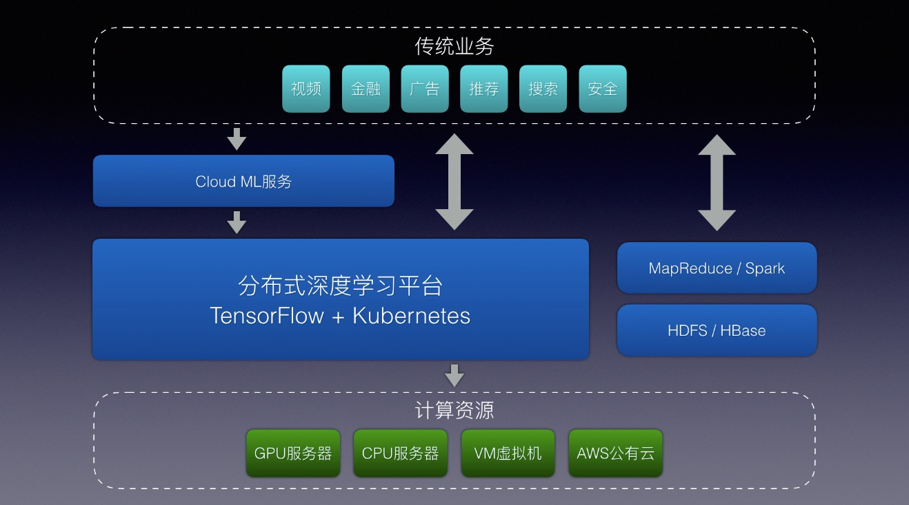
TensorFlow是很好深度学习框架，对于个人开发者、科研人员已经企业都是值得投资的技术方向，而Cloud Machine Learning可以解决用户在环境初始化、训练任务管理以及神经网络模型的在线服务上的管理和调度问题。目前Google Cloud ML已经支持automatically hyperparameter tunning，参数调优未来也将成为计算问题而不是技术问题，即使有的开发者使用MXNet或者其他，而不是TensorFlow，我们也愿意与更多深度学习用户和平台开发者交流，促进社区的发展。
最后总结
总结一下，本文主要介绍TensorFlow深度学习框架的学习与应用，通过deep_recommend_system项目介绍了下面使用TensorFlow的8个核心要点，也欢迎大家下载源码试用和反馈。
1. 准备训练数据
2. 接受命令行参数
3. 定义神经网络模型
4. 使用不同的优化算法
5. Online learning与Continuous learning
6. 使用TensorBoard优化参数
7. 分布式TensorFlow应用
8. Cloud Machine Learning
我是TensorFlow和Kubernetes项目的开发者，seagull和deep_recommend_system项目的作者，邮箱是tobeg3oogle@gmail.com，欢迎与深度学习用户和爱好者交流与学习。